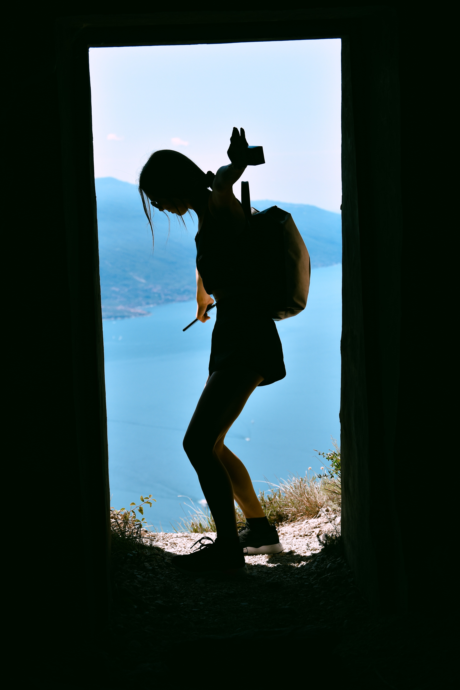
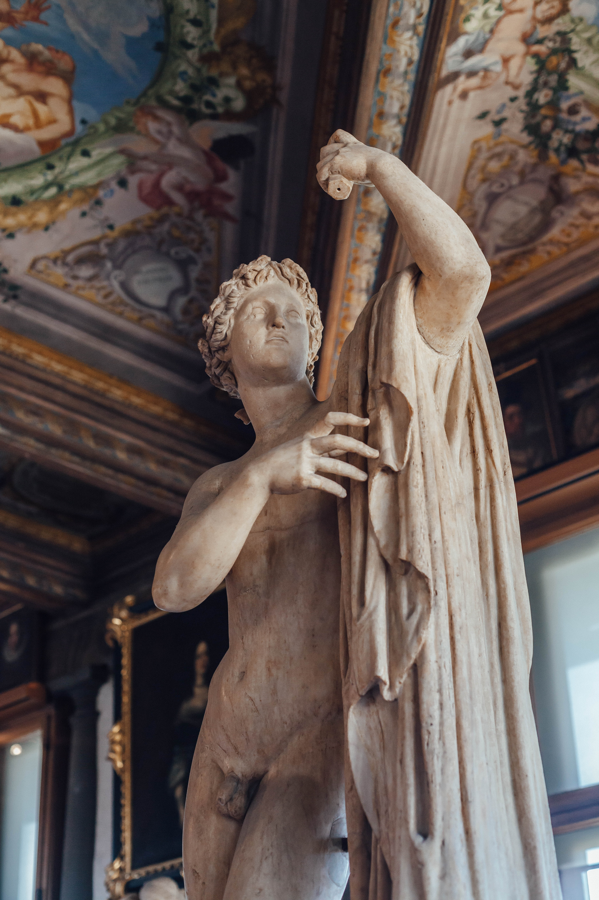

Where do I come from?
I am 100% Made in Italy and exported in Marseille to finish my studies at Kedge Business School.
 Kedge Business School
Kedge Business School
I'm a student in International Trade & Logistics passionated about:
I am 100% Made in Italy and exported in Marseille to finish my studies at Kedge Business School.
Kedge Business School
I grew up in Riva del Garda (a small village overlooking the lake and surrounded by mountains) and a strong connection to nature has always characterized my life. Water is my element but I also love hiking, trekking, camping, running, scuba-diving and sailing.
I couldn't live without a tasty meal and a good glass of wine. I like these moments of conviviality to share memories with the people I love.

I played violin for 6 years at the Conservatory of Trento. I love listening to classical music but I also enjoy visiting museums and art galleries.
If you wish check out my LinkedIn profile and my last article "The Awakening of the Sleepy European Union: The Enigmatic Role of the EU Sanctioning System Against China".
My Article My LinkedIn